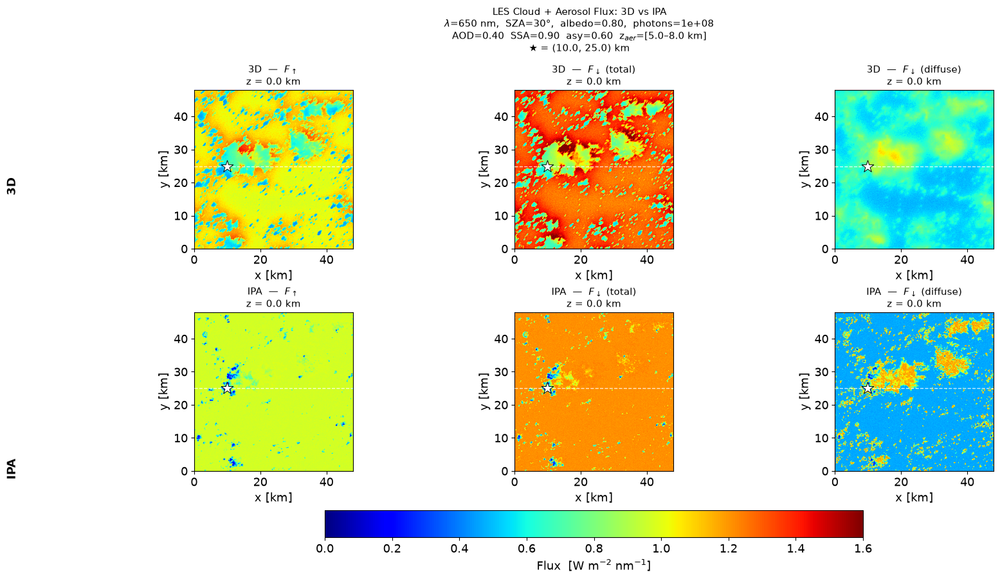
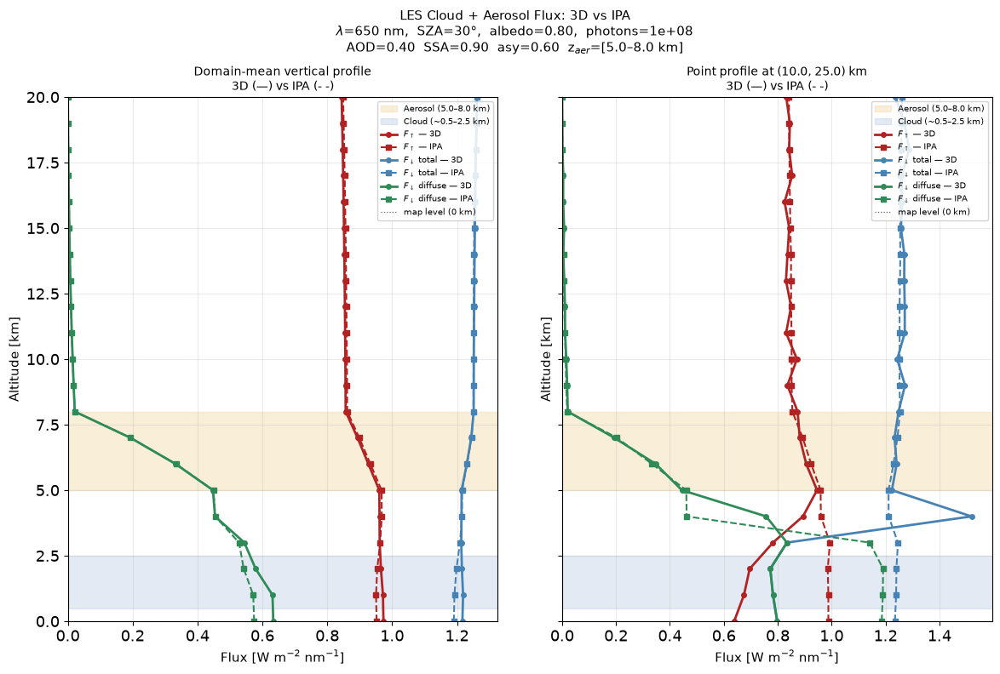
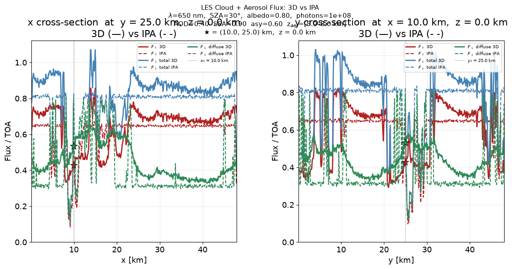
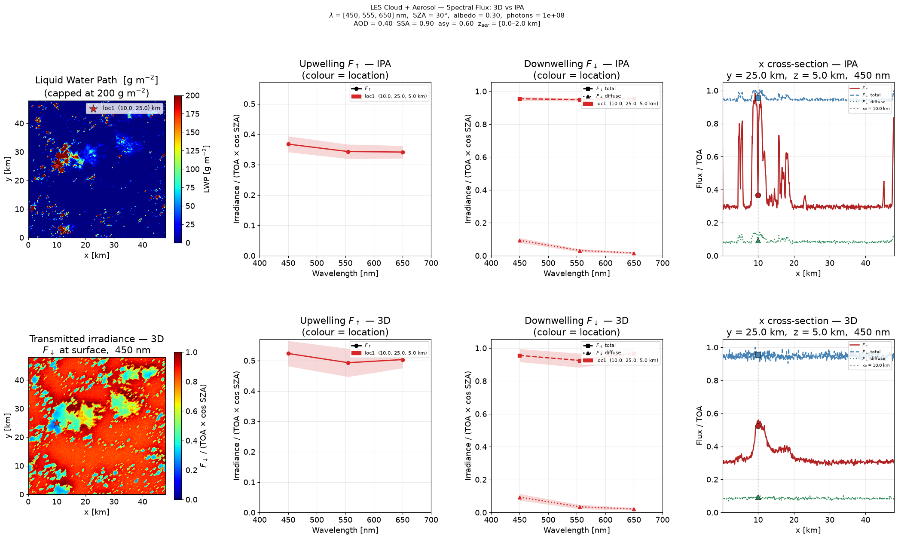
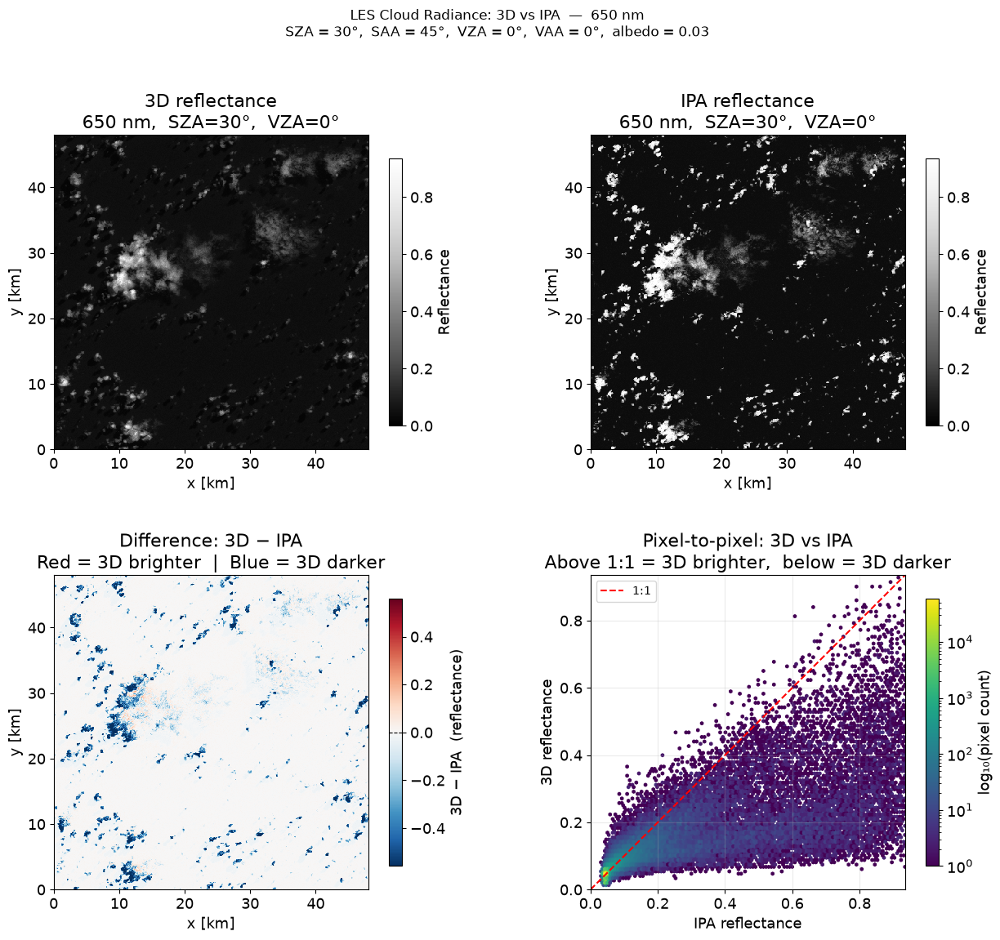
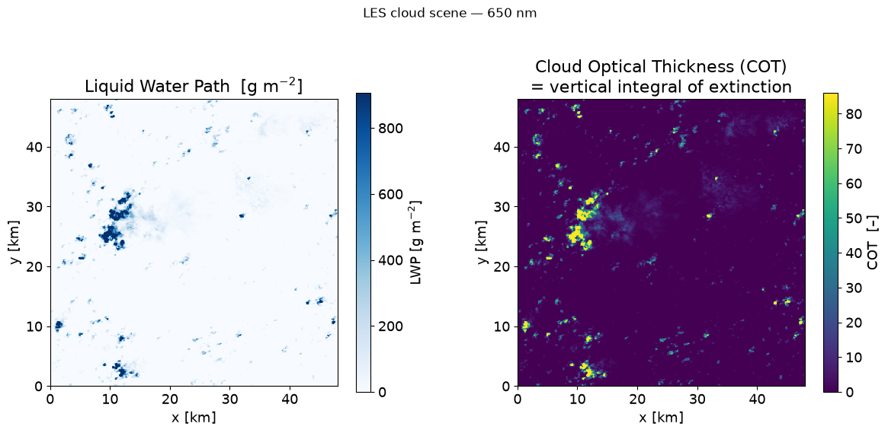
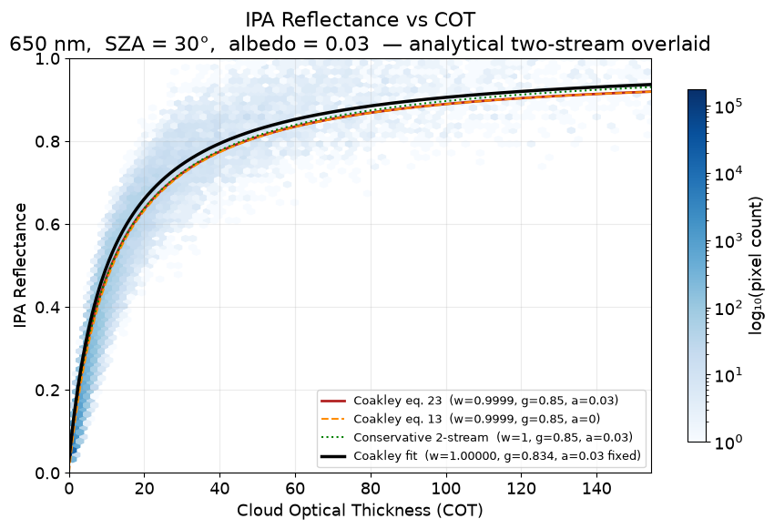

MCARaTS works by simulating individual photons one at a time. Each photon travels a random path — scattering, absorbing, reflecting — governed by the optical properties of the atmosphere and cloud. The result (flux, radiance) is the average over many such photons. Because each run uses a different set of random numbers, two independent runs with the same inputs give slightly different answers. That difference is the Monte Carlo noise.
The fundamental scaling law:
Noise ∝ 1/√N
where N is the number of photons per spectral bin. To halve the noise you need four times as many photons. To achieve one-tenth the noise you need one hundred times as many photons. This is why production runs with 10⁸ photons take hours while quick tests with 10⁶ take minutes.
Not all quantities are equally noisy. The relative noise (σ/mean) depends on the signal strength: a small-signal quantity estimated from the same photon pool is always noisier in relative terms than a large-signal one. In a clear sky at 650 nm:
- Direct-beam flux is ~98% of the total — relative noise is tiny (~0.1% at 10⁶ photons).
- Diffuse flux is ~2% of the total — relative noise is ~2% at 10⁶ photons.
- Upwelling flux is tiny (no clouds, low albedo) — relative noise is ~2–4%.
This is not a weakness of the simulation — it is a fundamental statistical property of any Monte Carlo estimator, and it is the same reason that measuring a faint star requires a longer telescope exposure than measuring a bright one.
How to use the noise diagnostic in Example 01:
The script plots ±1σ shaded bands around each flux profile.
The terminal prints the percentage noise for each component.
Start with photons=1e4 to see clearly visible bands, then increase
step by step to watch them shrink. Aim for <1% for scientific results.
MCARATS_V010_EXE is set in your current shell session.
conda activate er3t
echo $MCARATS_V010_EXE # must print the full path to the mcarats binary
cd $ERTDIR/er3t/examplesHow the scripts are structured
At the top of each script is a clearly marked student control block where you can change three main settings before running:
| Parameter | What it controls | Suggested values to try |
|---|---|---|
wavelength |
Wavelength in nm. Determines gas absorption strength, Rayleigh scattering intensity, and solar irradiance. | 400, 500, 650, 860, 1640 |
photons |
Number of Monte Carlo photons per spectral bin. More photons = less noise = longer runtime. | 1e6 (fast, for testing), 1e7 (recommended), 1e8 (production) |
solver |
The key pedagogical toggle. '3D' = full horizontal photon transport; 'IPA' = each column treated independently (standard satellite retrieval assumption). |
Always run both and compare! |
When you run a script it first prints a short startup summary to the terminal
echoing the settings it will use — confirm these look right before the simulation starts.
On a laptop at photons=1e6 each script takes a few minutes.
Example 01 — Clear-sky flux profile
The simplest case: sun shining through a clear, gas-only atmosphere. No clouds, no aerosol. Good first test that EaR³T and MCARaTS are connected correctly.
python 01_clear_sky_flux.pyExpected output:
- Terminal: MCARaTS runs 3 × (number of spectral bins) jobs, prints progress.
- PNG file:
01_clear_sky_flux-example_01_flux_clear_sky_3d.png— vertical profiles (0–20 km) of upwelling (red), total downwelling (blue), direct beam (green), and diffuse downwelling (pink) flux.
What to look for: Direct beam decreases smoothly with depth as the
atmosphere absorbs/scatters it. Diffuse increases toward the surface. Upwelling is small
(no clouds to reflect). For a clear sky, solver='IPA' gives identical results
to solver='3D' — the difference only shows up once there are inhomogeneous clouds.
Try wavelength=400 vs wavelength=1640 to see the effect of Rayleigh
scattering (much stronger in the blue).
The script runs Nrun independent Monte Carlo batches with different random seeds.
The spread between them is pure statistical noise — not physics.
It is plotted as a semi-transparent shaded band (±1σ) around each profile.
The terminal also prints Max noise: X.X%.
Try this exercise — reducing photons step by step:
- Set
photons = 1e4and run. The bands will be extremely wide — the simulation is essentially useless at this photon count. - Set
photons = 1e5. Bands narrow but are still clearly visible, especially on the diffuse component (smallest signal, highest relative noise). - Set
photons = 1e6(default). Bands are visible but acceptable for a quick test. Note that Max noise is typically 5–15%. - Set
photons = 1e7. Bands become very narrow on the direct beam but may still be visible on diffuse. Max noise typically drops to 1–3%. - Set
photons = 1e8. Bands are barely visible. Max noise < 1%. This is production quality — but takes much longer.
Key observations:
- Noise scales as 1/√N (halving noise requires 4× more photons).
- The diffuse component is always noisiest in relative terms because it is the smallest signal — any small absolute noise becomes a large percentage. This matters when you need accurate diffuse-to-direct ratios.
- Increasing
Nrungives a better estimate of the noise but does not reduce it — only more photons does that. - For the 3D cloud examples (02–05), you need more photons than for clear sky because the spatial heterogeneity adds another source of run-to-run variance.
Rule of thumb: Max noise < 1% is good for scientific use. Max noise < 5% is acceptable for qualitative exploration. If your shaded band is as wide as your mean profile, start over with more photons.
Example 02 — 3D cloud flux (LES field)
Adds the LES cloud field. Both 3D and IPA solvers run automatically in one call and the
results are placed side-by-side in a single figure.
Requires data/00_er3t_mca/aux/les.nc from the data install step.
python 02_3d_cloud_flux.pyExpected output: A single PNG with a 2×2 panel layout — rows are 3D (top) and IPA (bottom); columns are F_up and F_down (total) — both at the selected altitude level.
What to look for: The spatial patterns differ between 3D and IPA
even though domain means are similar. In 3D, photons scatter sideways out of thick cloud
columns into neighbouring clear columns — producing brighter cloud edges, darker centres,
and smoother gradients. IPA treats every column independently so cloud edges are artificially
sharp. Setting aod=0.0 in Example 03 should reproduce this result exactly.
Example 03 — 3D cloud + aerosol layer, flux
Extends Example 02 with a horizontally uniform aerosol layer at any altitude. Runs both 3D and IPA solvers and produces three output figures.
python 03_cloud_aerosol_flux.pyOutput files (reference output with 10⁸ photons; default is 10⁵ for speed):
Flux maps — six panels (3D and IPA, all three flux components) in km coordinates:

Vertical profiles — domain-mean and single-point profiles from 0–20 km:

Cross-sections — x and y slices of flux at the output location, normalised by TOA irradiance:

Key parameters to explore:
aod— aerosol optical depth; set to0.0to reproduce Example 02 exactlyssa— single scattering albedo:0.9= mostly scattering (sea salt),0.7= absorbing (black carbon, smoke)z_bot,z_top— layer altitude [km]; try placing the aerosol inside the cloud layer to observe the direct interactionx0,y0— output location in km; the star on the maps and the point profile let you verify that the cross-sections correspond to the correct pixel
What to look for: An absorbing aerosol (low SSA) reduces surface downwelling and heats the aerosol layer. The vertical profile always shows more diffuse radiation in 3D than IPA regardless of aerosol position — a horizontal photon-transport effect IPA cannot reproduce.
Example 04 — Spectral flux: 3D cloud + aerosol
Extends Example 03 across multiple wavelengths simultaneously, and adds multiple user-defined output locations. Runs both 3D and IPA solvers at each wavelength and produces a single comparison figure.
python 04_cloud_aerosol_spectral.pyOutput (reference output with 10⁸ photons; default is 10⁶ for speed) — a 2×4 figure: rows are IPA (top) and 3D (bottom); columns are the LWP map, upwelling spectra, downwelling spectra, and an x cross-section at the first wavelength and output location:

Key parameters to explore:
wavelengths— list of wavelengths in nm; try spanning from UV to SWIR (e.g.[400, 650, 860, 1640]) to see gas absorption featuresx_out,y_out,z_out— lists of output locations; add a second point inside a thick cloud column and compare its spectrum with a clear-sky pointaod,ssa,asy— aerosol optical properties; the ±1σ shaded bands show Monte Carlo noise on the spectra
What to look for: Gas absorption bands (water vapour near 1400 nm, oxygen A-band near 760 nm) appear as dips in the downwelling spectrum. The 3D–IPA difference is spectrally flat for a purely scattering aerosol but develops spectral structure when absorption is included.
Example 05 — 3D cloud radiance (satellite view)
Switches from flux to radiance: simulates what a satellite at 705 km altitude would observe looking through the LES cloud field. Both 3D and IPA solvers run in one call. This is the most direct connection to real satellite imagery and cloud retrieval biases.
python 05_3d_cloud_radiance.pyOutput files (reference output with 10⁸ photons; default is 10⁶ for speed):
4-panel comparison — 3D reflectance, IPA reflectance, difference map, and pixel scatter:

Cloud scene — liquid water path (LWP) and cloud optical thickness (COT):

IPA reflectance vs. COT with Coakley two-stream theory curves:

Key parameters to explore:
solar_zenith_angle— try 60° for long shadows and amplified 3D effectssensor_zenith_angle— off-nadir viewing (30–45°) makes shadows dramaticsurface_albedo— 0.03 = ocean, 0.8 = fresh snow; affects the r(τ) baselineplot_only = True— skip RT entirely and regenerate all figures instantly from the saved HDF5 files; use this to tweak colour scales or add annotations without re-running MC
What to look for: In the difference map, red = 3D brighter (cloud edges, clear-sky halos), blue = 3D darker (optically thick cloud centres). The r(τ) plot shows how well the simple two-stream theory predicts the MC result — and the fitted g and SSA reveal the effective optical properties of the LES cloud field at that wavelength.
A standalone plotting script is also provided:
python 05_3d_cloud_radiance_plot.pyThis reads only the saved HDF5 and scene files — no er3t import needed — and is a clean starting point for students who want to add their own analysis or plots.
Example 06 — MODIS Data Download & Pre-processing
Examples 01–05 use a synthetic LES cloud field. Examples 06–07 switch to
real MODIS satellite data for a student-chosen date and region. This script
downloads five MODIS products from NASA LAADS DAAC plus a Worldview true-colour RGB
tile, grids everything onto a common 250 m domain, and saves the result to
modis_scene_input.h5 for use in Example 07.
python 06_modis_data_download.pyEARTHDATA_TOKEN in your
shell before running — see the "Optional: test NASA Worldview access" section of the
Installation guide.
The RGB tile alone does not need a token, but the L1B, L2, and surface products do.
Products downloaded (~390 MB total for the default scene):
MYD02QKM/MOD02QKM— 250 m L1B radiance and reflectanceMYD03/MOD03— geolocation (SZA, SAA, VZA, VAA, surface height)MYD06_L2/MOD06_L2— 1 km cloud product (COT, CER, CTH)MCD43A1— Ross-Li BRDF kernel parametersMCD43A3— white-sky surface albedo- Worldview RGB tile — true-colour context image (no token required)
Expected output:
data/06_modis_data_download/<date>(<extent>)/modis_scene_input.h5— gridded inputs consumed directly by Example 0706_modis_data_download-overview_<wl>nm.png— 4-panel overview: true-colour RGB, cloud optical thickness, solar zenith angle, and white-sky surface albedo
Key parameters to explore (student control block at the top of the script):
date— MODIS overpass date; pick one where your region is cloudyextent—[lon_min, lon_max, lat_min, lat_max]region of interestsatellite—'aqua'or'terra'wavelength— 650 or 860 nm (MODIS Band 1 or Band 2)
The same settings can be overridden from the command line without editing the script, e.g.:
python 06_modis_data_download.py --date 2019-09-02 --extent -108.6 -107.4 37.4 38.6Cloud field treatment: MODIS L2 cloud properties (COT, CER, CTH) are
only available at 1 km resolution. This script bilinearly interpolates them onto the 250 m
target grid so cloud edges taper smoothly instead of repeating blocky 1 km steps. The full
research-grade pipeline (projects/02_modis_rad-sim.py) goes further and runs
an independent-pixel (IPA) retrieval to derive a true 250 m COT field from the reflectance
data itself — that extra step is intentionally left out here to keep the example simple.
Using the L2 COT directly is a valid and physically transparent starting point.
Already downloaded the data for a scene and just want to regenerate the figure (e.g. after tweaking a colour scale)? Use:
python 06_modis_data_download.py --plot-onlyExample 07 — MODIS Radiance Self-Consistency Check
Loads the modis_scene_input.h5 file produced by Example 06 and runs a 3D
Monte Carlo radiance simulation with MCARaTS, using the MODIS-retrieved cloud state (COT,
CER, CTH from MYD06_L2) and the MCD43 surface BRDF as inputs. The simulated radiance is then
compared pixel-by-pixel against what MODIS actually measured.
python 07_modis_radiance.pyThis exercise reproduces Appendix 2 of Chen et al. (2022/2023). The MODIS cloud retrieval (COT, CER, CTH) is itself the output of a 1D radiative transfer model applied to the observed reflectance. If that retrieval and the 3D forward model here are physically self-consistent, feeding the retrieved cloud state back into the 3D model should reproduce the radiance MODIS actually measured — points should fall on the 1:1 line. Deviations reveal where the 1D retrieval assumption breaks down: cloud edges, shadows, and strongly heterogeneous cloud fields show the largest offsets between simulation and observation.
Expected output — a 4-panel figure:
- Top-left — MODIS measured radiance map
- Top-right — EaR³T simulated 3D radiance map
- Bottom-left — log-density scatter of measured vs. simulated radiance, with the 1:1 line
- Bottom-right — Monte Carlo relative noise (σ/mean across
Nrunindependent runs)
Saved as 07_modis_radiance-comparison_<wl>nm.png, alongside
data/07_modis_radiance/<scene>/post-data.h5 with the underlying comparison arrays.
Key parameters to explore (student control block at the top of the script):
fname_predata— path to themodis_scene_input.h5from Example 06; override with--predatato point at a different scenephotons,Nrun— the default (photons=1e4) is fast but noisy; increasephotons(and watch the noise panel shrink) for a cleaner comparison — the original paper used 1e8ncpu— number of CPU cores MCARaTS uses
What to look for: Most pixels should cluster near the 1:1 line in the scatter plot — evidence that the MODIS operational retrieval and the 3D forward model agree. Pixels that fall well off the line are usually at cloud edges or in shadow, where the plane- parallel assumption behind the MODIS retrieval breaks down but the 3D simulation captures the real horizontal photon transport. Compare the noise panel against the scatter: high-noise pixels (low photon counts, thick cloud) should be treated cautiously when judging agreement.
Already ran the simulation and just want to regenerate the comparison figure?
python 07_modis_radiance.py --plot-only